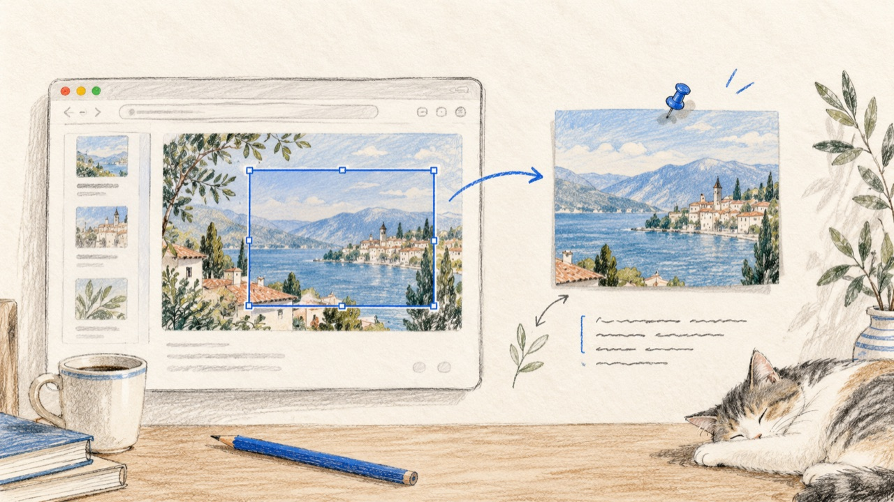

⌘⇧2 按下，框选的区域立刻变成一枚钉在桌面上的贴图——标注、识字、重启不丢，全部在本机完成。
免费 · macOS 15+ (Apple Silicon) · 无网络依赖 · 首次打开说明

六种标注、撤销重做、样式实时——全部长在按键上，手不用离开键盘去够菜单。
按下即截：选区外自动压暗，右下角实时尺寸。回车，选区立刻成为置顶贴图——拖边调整、整体移动，不挡事也不丢。
Vision 引擎离线识别贴图上的文字，一键复制全部结果。识别失败不影响贴图使用，关闭贴图自动取消任务。
贴图位置、大小、标注、识字结果全部落盘。退出应用再打开，一切还在原来的地方，像从没关过。
不用先进编辑器——框选完直接画。贴图、复制、保存，全都带着标注走。
文字的字号、颜色、加粗、底色；聚光灯的暗度与形状；放大镜的倍数——改一处，全部即时生效，包括已经画上去的。
像键帽侧壁的副刻——重度使用者的全部秘密，都在这一面板。
| 全局 | ⌘⇧2 | 截图并贴图 | ⌃⌥2 | 从剪贴板贴图 |
| 全局 | ⌃⌥3 | 截图并复制 | ⌃⌥4 | 截图并保存 |
| 框选中 | A T M S Z G | 切换标注工具 | ⌘Z / ⌘⇧Z | 撤销 / 重做 |
| 框选中 | ↩︎ | 确认贴图 | ⌘C · ⌘S | 复制 · 保存 |
| 贴图上 | ␣ | 打开标注 | ⇧C | 复制识字结果 |
| 所有界面 | ESC | 取消 / 关闭 | ⌘⇧2 | 再来一张 |
组合键被其他应用占用时，菜单栏图标会提示哪些注册失败。
没有账号，没有云同步，没有统计上报。截图和索引全部存放在本机目录，随时可查可备份。
~/Library/Application Support/TieKe/
下载 DMG → 拖入应用程序 → 授予屏幕录制权限。
点击「下载 贴刻」获取 DMG，打开后把 贴刻 拖入「应用程序」。
应用未公证：右键点击 → 打开 → 再点「打开」，一次性确认。
系统设置 → 隐私与安全性 → 屏幕录制，勾选 贴刻。之后菜单栏见。
框选一块屏幕，回车——你的第一张贴图已经钉在桌面上了。